General Gameplay
The million dollar question in a warzone 1vs1 game is how to win. And, well, this is a complex problem that has a plethora of solutions and approaches. You can win a game by pure luck, or a random counter, let alone a Fizzer pick. You can also win by an immaculate prediction, for example Turn 6.
The most consistent approach is to do good to perfect picks and accompany them with solid moves. You measure whether you are ahead or behind based on the position, income, and armies on the field. If you are ahead, look to converting that advantage into a win. If you are behind, look to get favorable trades that can bring you back in the game.
Playing from behind and looking to make a comeback can mean a lot of things, and ultimately depends a lot on the template and position. But in general it revolves around kill rates and efficiency. In my opinion if you want to make the jump from a casual to a really good player you need to:
- Train your intuition so you become comfortable
- Take into account kill rates and efficiency
A lot of players aren't good at converting an advantage or making a comeback in a position. You need to think outside the box and find your win conditions, however crazy it may seems. There's a lot of outright crazy comebacks in this game, I cannot go through all of them, albeit I try in each individual templates, but you can see games like jache vs math wolf, ma biv.
Lastly, this section is mostly about 0% 60/70 SR templates. A lot of ideas extend to other templates, but are predominantly useful here.
Efficiency and Kill Rates
At 0% luck and SR settings, the game is deterministic. 1.8 becomes 2, 2.4 becomes 2, 3.2 becomes 3, and so on. The result of any battle is 100% predictable once you know the stack sizes. The vast majority of templates use the 60/70 kill rate ratio which introduces just enough variety and strategy to make things competitive. At lower attack rates, big bonuses are painfully slow and you favour dense, high-income region instead. At higher defender rate, attrition is increased. Each extra income saves you more over time. At the 60/70 rates, the break-even ratio floats around 1.7, meaning you need generally around 1.7 more attackers than defenders, while at something like 30/40, that ratio jumps to 2.3-2.5, effectively meaning a small income swing no longer guarantees you'll ever cross the line and stalemates occur more easily. But what does it mean behind the scenes.
With 0% luck and SR settings, the armies you kill are Kills = round(p × N) where:
p = 0.60for attackers or0.70for defendersroundmeans nearest integer. 0.5 rounds up.
If we write p as a reduced fraction:
p = 3/5(attack) -> denominator 5 -> five distinct curvesp = 7/10(defense) -> denominator 10 -> ten curves
Let N = dk + r for d the denominator (5 or 10) and r its remainder.
- Attacker kills
K = 3 × k + round(3 × r / 5) - Efficiency given as
K / N = (3/5) + δ / Nforδin the range[-0.5, +0.5] - As
N, the number of attackers, grows,δ / Napproaches 0, so every curve asymptotically tends to 0.60 (or 0.70).
In other words, small attacks are always more efficient than big attacks. But also some attacks are generally more efficient than others from the above 5/10 distinct curves.
Attacker Curves at p = 0.60
| Residue r (mod 5) | Sequence (N) | round(3r/5) | First Kills / N | Behaviour |
|---|---|---|---|---|
| 0 | 5, 10, 15, ... |
0 | 60% | Flat at 60% (perfect multiples) |
| 1 | 1, 6, 11, 16, ... |
1 | 100%, 66.7%, ... | Starts above 60%, then falls |
| 2 | 2, 7, 12, 17, ... |
1 | 50%, 57.1%, ... | Starts below 60%, then rises |
| 3 | 3, 8, 13, 18, ... |
2 | 66.7%, 62.5%, ... | Starts above 60%, then falls |
| 4 | 4, 9, 14, 19, ... |
2 | 50%, 55.6%, ... | Starts below 60%, then rises |
To elaborate:
- Multiples of 5 are never wrong. Perfectly on-rate and easy to memorize, always kill 60%.
- The bigger the attack, the less efficient it is. Take residue of 1 at mod 5, the most efficient attacks. An attack of 1 army guarantees you a 1:1 exchange. An attack of 6 kills 0.66, an attack of 11 0.63, an attack of 16 0.625 and so on till it reaches asymptotically the 0.60 attackers kill rate.
Attacks at residue 0, 1 or 3, are generally a lot more efficient than residue 2 and 4. This is a very complex way of describing why you send attack with 3 instead of 4 attackers. 6 instead of 7, and so on. Same kills, fewer losses, more efficient. Sequences at 1 or 3 give you the best per-army punch when stacks are small, but once you bypass approximately 20 troops, the edge shrinks below 1%, and "just send what you've got" is fine.
Defender Curves at p = 0.70
| r (mod 10) | round(7r/10) | Sequence (N) | First Kills / N | Behaviour |
|---|---|---|---|---|
| 0 | 0 | 10, 20, ... | 70% | Flat at 70% (multiples of 10) |
| 1 | 1 | 1, 11, 21, ... | 100%, 72.7%, ... | Starts high, then falls |
| 2 | 1 | 2, 12, 22, ... | 50%, 66.7%, ... | Starts low, then rises |
| 3 | 2 | 3, 13, 23, ... | 66.7%, 69.2%, ... | Starts low, then rises |
| 4 | 3 | 4, 14, 24, ... | 75%, 71.4%, ... | Starts high, then falls |
| 5 | 4 | 5, 15, 25, ... | 80%, 76%, ... | Peaks at 80%, then falls |
| 6 | 4 | 6, 16, 26, ... | 66.7%, 68.8%, ... | Starts low, then rises |
| 7 | 5 | 7, 17, 27, ... | 71.4%, 70.6%, ... | Starts high, then falls |
| 8 | 6 | 8, 18, 28, ... | 75%, 72.2%, ... | Starts high, then falls |
| 9 | 6 | 9, 19, 29, ... | 66.7%, 68.3%, ... | Starts low, then rises |
After approximately 30% defenders, every curve is within ± 1% of 0.70. The same mathematical logic applies here as well. Take for example r = 1. 11 defenders kill 0.727, 21 defenders kill 0.714, 31 defenders kill 0.709 and so on approaching asymptotically 0.70. Some r's approach 0.7 from higher values, some from lower values. The biggest take away you can get from the table is to never end a turn defending a territory on 2, 3, 6, 9 etc. Well, almost never. There can always be very specific scenarios where this would do the trick but it generally leads to losses of armies. 5-defender blocks are outright the most efficient thing you can do.
Practical tips
All this gets highly mathematical but there's a lot of takeaways and you have to keep in mind every thing here is very case-specific. Doing exclusively attacks of 1 and 6 won't win you every game.
- Using 3-, 6-, 11- attacks are the most efficient. These numbers sit on the |66% starts-high| attacker curve and kill as many as 4/7/8 would but cost one fewer unit every single swing.
- Defending with 2, 3, 6, 9 etc is inefficient. This however doesn't mean it's always wrong. Yes, 6 defenders kill 4 attackers, as many as 5 defenders kill, yet they make the enemy jump from 8->10 attackers. This extra unit from the armies required from them can buy you an extra turn on a chokepoint. For example Turn 12, Greenland. Though I still want to stress that ideas like these are useful to either make a comeback or provide a moveset for you that cannot go wrong. Generally you should think of efficiency as that will give you the necessary advantage in armies that can be converted to a win. Take into example this miserable Biomes game I had once, and particularly turn 6 onwards. I need to play a crazy expansion game due to picking poorly and out of pure luck/my opponent misplaying it, I manage to get him to lose a card piece on turn 6 and transform the game into a 16v14 game (that becomes 12v11 after sanctions). However, do I have an advantage in reality? By end of turn 6:
- Syphen sure is down 1 income, but has a total of 14 movable armies, 10 in fronts, 4 delays.
- I (7ate9) have 9 movable armies. 6 in fronts and 3 delays.
- My income advantage is not seen, as I cannot realistically outdelay him, nor attack him due to having way less armies in our fronts. So I did the only thing I could do, play around efficient attacks/defenses and accept that I cannot do more, I need to have him throw armies in the bin to convert my advantage. And through an 8 army defense sit, and 2 attacks in USA of 3 and 6, just within one turn the movable armies in fronts went from 10v6 in his favor to 2v3 in my favor. While you shouldn't look into this as me making the perfect moves, you should get into the habit of investing time into every single move and idea you make in your game.
Information is power. As I stated in the beginning of this section, 0% luck SR settings are deterministic. Deterministic combat turns this into a chess-like game where you enter lines, sequences of moves, based on how efficient you are. While you can keep as a rule of thumb which attacks and which defenses are the best, or tier them even, the ideas should pop in upon looking for forced moves. Take for example this Strat MME game on Turn 4 shown below.

From Bast's perspective, you have information of all 3 enemy picks and you know the game is 14vs10 income and you know you have first move on the following turn. What do you do and what is your reasoning? Simplify the position, find moves that will work 100% of the time.
- If you deploy +14 in Vorkuta and first move with 15, if Buns deploys +10, 16v12 becomes 7v3 and Buns can still coinflip break the other territory (the position is still completely winning for bast, it's a 10vs10 income game with ~10 armies advantage). bast in this position can get the card piece in Antarctica.
- If you as bast think of the position as: "Buns has 10 income, he goes up to 12, kills up to 7, I can guarantee defense by deploying 6&7, even 6&6 and first move 1 extra army. I can force outdelay and then attack and slowly proceed". The end result isn't wrong, at the end of the turn Buns will likely get SA, and the game would now be a 14vs14 game with army advantage. The problem is that it's not a forced win and you waste armies in delays.
So we are stuck between these two ideas, or well, strategies. One of them is very safe and slow, the other risks a recapture of our bonus. Is it a prediction? No. Remember the kill rate tables and discussion. Why first move with 15vs12 instead of 13vs12? You can deploy +12 on Vorkuta and first move with 13, get at worse a trade of 14vs12 to 6vs4 and deploy the remaining 2 of your income in Ufa. Even if Buns decides to full deploy, his remaining alive defenders (3 after you subtract the army stand guard), cannot capture Ufa.
Taps
Tapping is an idea of attacking with exactly one army. Since 0.60 × 1 = 0.60 it rounds to 1, which is a perfect trade 1:1. The real value comes in specific scenarios, some of them explained later, but a crucial one the fact that taps change the remainder class of the enemy stack by -1, which can flip how the rounding behaves for a big attack the following turn. Practically speaking, lets define taps and their usage in 2 categories, offensively and defensively.
- Tapping as the attacker
- Useful for sniping leftover armies to deny delays
- Useful at reducing an opponent's stack through equal trades
- Useful at setting up a forced kill or sequence later on
- Tapping as the defender
- Useful for sniping leftover armies to deny delays
- To gain a favourable kill rate.
| Start (A v D) | Result if attacker swings first | Result if defender taps, then attack | Defender gains ... |
|---|---|---|---|
| 6 v 6 | 2 v 3 | 1 v 3 | +1 net army |
| 9 v 9 | 3 v 4 | 2 v 4 | +1 |
| 12 v 12 | 4 v 5 | 3 v 5 | +1 |
| 19 v 19 | 6 v 8 | 5 v 8 | +1 |
In case this isn't self-explanatory, for example in the 9vs9 scenario:
- No tap: 9vs9. 8 att kill 5. 9 defenders kill 6 -> 3vs4
- Yes tap: 9vs9 -> 8vs8. 7 att kills 4. 8 defenders kill 6 -> 2vs4
The idea of sniping leftover armies to deny delays is something taking place predominantly in brawl templates, but can nonetheless be applied to everything. For example in this French Brawl game note how both players create artificial delays through tapping, on Turn 4 where Beep taps first order to reduce the opponent's stack, on Turn 5 where Othello taps a leftover south to deny from the opponent the extra delay they can gain from moving that, and so on. To expand on this idea, sometimes you need to first move attacks in order to deny from your opponent this 1:1 trade. For example in this French Brawl game my opponent Turn 2 south should first move me with a 3attack, to get a better 2:1 trade for himself. Instead he allows me to get 2x 1:1 trades. This is practically risk-free when you have priority that turn, as in the opposite scenario your opponent might always move that army away and you get a 1:0 trade. For example in this French Brawl game pay attention to Turn 2 where I tap on my first move (1:1 trade), and my opponent taps back the same territory (1:0 trade). Try to avoid these at all costs.
Min-maxing your armies through optimizing kill rates is almost a revolutionary concept to new players, and while it does take effort, it elevates your gameplay. It is, in my opinion, one of the three most important thing on your journey to becoming a better player, together with making great picks and understanding the template's and map's dynamics.
Army Management
Expanding with Leftovers & Expanding Efficiently
Take a look at these 2 games at Strat MME featuring Greenland in 2 Turns and in 3 Turns. It is possible in MME's settings to complete Greenland as your first bonus by the end of T2, only if you spawn at the orange circles (Danmark Havn, Nuuk) and only if you commit 10/10 of your deployments in the first two turns. To generalize, in this template a bonus consisting of 6 territories, can be completed by the end of T2 perfectly optimizing your armies.
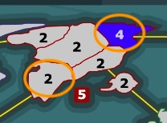
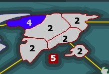
To expand on this idea, take a look at this staged game. The two players (call them Black and Ivory from their colours) start building up to a +4 bonus as their first completed bonus. They use a different approach:
- Black splits his deployments on T1, creating a scenario where he will need 2/5 of his deployments on T2 for West Russia. He deploys 3/5 of his deployments on T2 on East USA.
- Ivory doesn't stack in West Africa T1 and needs 3/5 there on T2 to finish the bonus and 2/5 on East China.
The verdict is that in order to complete a +4 bonus as your first bonus in Strat MME, you can go two ways:
- You deploy 7/10 of your income in the first 2 turns to complete it and end up with 2 leftovers in the completed bonus & 2 elsewhere.
- You deploy 8/10 of your income in the first 2 turns to complete it and end up with 3 leftovers in the completed bonus & 1 elsewhere.


Whether you go for Ivory's or Black's approach depends on your gameplay and distribution. The Black approach is more direct, using the least amount of deployments required to finish the project moving into the next one. The Ivory approach can be useful if you suspect things to not work as expected and want a stack just in case. Sometimes you may even want to mix things up in order to leave multiple options open. For example in this Antarctica game I get 1/2/6, have all the information I can get, but lose the game due to my opponent deploying on T1 in a way that leaves him with multiple options available (ingame chat).
Both Strat MME and Antarctica, the 2 above examples, are vanilla 3x4 templates with 5 income, where expansion isn't so strict—there's a certain level of flexibility in the moves you can play and the order you can capture bonuses. In contrast, in Tarabonia's Choice chaining expansion in a way that allows you to get consecutive bonuses is stricter. For example in this game Buns goes for 4->4->8->11 and has no room for error. You just cannot afford not splitting and attacking this way, else you'll fall behind in income.
In general, expanding efficiently revolves around a) maximising the usage of your leftover armies and b) not capturing territories you don't need before completing a bonus. However, it's a case-specific idea that changes for template and distribution.
5vs3 against 3+1vs3
When looking specifically in trying to capture a 3 army territory, neutral or not, you can quickly see that:
- 5vs3 captures and results in 2 leftovers.
- A combination of a tap & a 3vs2 attack captures and results in 1 leftover, as displayed below, part of this Guiroma Game.
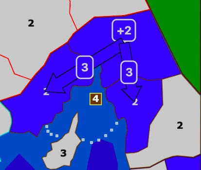
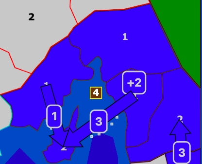
What's the difference? The idea is using all of your armies in the best way possible. The tap + 3vs2 attack requires 1 less army to setup that you can deploy and have active in another front. While this is especially useful in Guiroma, it can be used against an opponent's stack or to reduce a wasteland. For example:
- To kill a 5 army neutral, you can go for 8vs5 or 6vs4 and a tap (7 deployments instead of 8).
- To kill a 6 army neutral, you can go for 6vs4 and two taps (8 deployments instead of 10).
- To capture a 10-army wasteland, you get in throughout 2 turns by doing 3 taps on T1 and 3 taps + a 6vs4 on T2 (12 deployments instead of 16). And so on.
This is analyzed further in the delaying section.
Delaying
Delaying is something directly correlated with the kill rates of a template. In standard 60:70 kill rates, the defender usually gets a favorable trade. Due to this simple fact, the player attacking usually tries his best to outdelay their opponent, hoping to be the last person on the board to attack. Why? Because attacking after the opponent is better. This can lead to pretty braindead scenarios like the one shown in the figure.

As a concept delaying is particularly weird to understand and comes instinctively. It is very easy to fall into the habit of playing very safe, mass-delaying and attacking on the very last move but that's a) very predictable and b) not the best thing to do more often than not. In fact, if you want to make pretty decent moves drunk at 2am with 1% battery having forgotten the position, overdelaying and doing a bunch of small attacks is bullet-proof, but lazy and exploitable, while at the end of the day you will never capture back a territory by doing 3-army attacks.
Ability to "Generate" new armies
In this game there are two very interesting mechanics that you may or may not have noticed yet. Both of them have to do with how armies can sort of multi-attack even when multi-attack is disabled.
The first concept revolves around this sequence:
- I have a front of A vs D armies.
- I try transfer n amount of armies to the territory in the front (A -> A + n).
- My opponent attacks that territory, from which process I lose some armies.
- I out-delay and attack back, using A + n, not just A.
Take for example the following game:
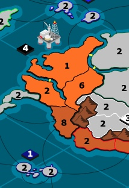
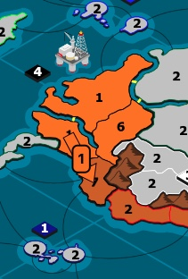
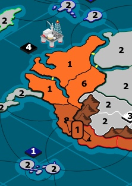
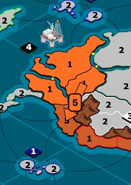
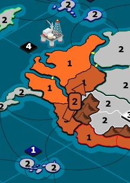

- In the beginning of the turn, I have 7 movable armies in Quito.
- Opponent taps me once, the number of movable armies drops to 6.
- I transfer one army forward. Intuition says of course armies don't multi attack, that army cannot attack. I am still at 6 movable armies from previous step.
- My opponent attacks with 5, kills 3. My 8 defenders drop to 5.
- I perform two attacks on my last moves, split, 2 & 2.
The way I think about this mechanic is that on step 4, my opponent attacks with 5 and kills 3 of my 8 defenders, including the army I transferred in the same turn. So in reality, my initial 6 movable armies didn't drop down to 3 after the attack, but to 4. The aftermath is that you should be extra careful about how to approach attacking and defending.
The second concept is a continuation of the first one in some way. Above we discussed how when an opponent attacks it acts like killing first the delays you brought in on the same turn before the attack, instead of the initial movable armies. This is about the following sequence:
- I plan 2 split attacks from the same territory to two opponent territories.
- I fail to capture an enemy territory, but not all attackers die.
- Opponent attacks me on that territory from another territory and kills some armies that survived the first hit.
- I attack the second territory with more armies than I should've.
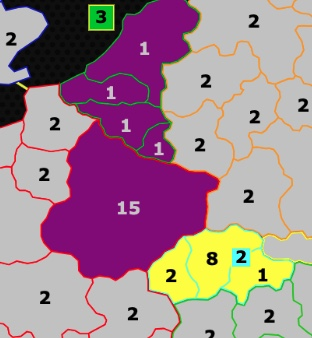
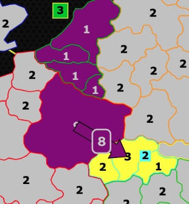
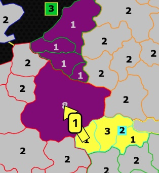

- I deploy up to 15 and plan on doing two attacks of 8 and 6.
- I queue the first attack of 8, get a 6, -5 trade. My stack drops from 15 to 9.
- My opponent taps me from another territory. My stack drops from 9 to 8. Instinctively, this can make you think that the initial attack that I queued with 6 armies will now be 5 armies, but the tap trades an army from the attackers that survived the first attack.
- I successfully queue an attack of 6, making it look like I gave birth to an extra army.
This, as a mechanic, is really hard to take into consideration or utilize in your gameplay. Maybe sometimes as an attacker you can purposefully have your two attacks in a different cycle in hopes your opponent will attack in between and your armies get some extra value. Or as a defender you have to take into consideration the existence of this mechanic and approach consciously the defense of a double/triple border.
When to delay
Generally, if you are a beginner you should delay more, as attacking after your opponent results in a better trade due to the 60/70 kill rate nature. If you've passed the beginner stage, you should start evaluating positions and whether delaying would bring an advantage in the first place.
Furthermore, once you get into the habit of evaluating your position ask yourself: am I winning or losing? Delays are a reactionary way of playing the game when defending or when trying to grow an advantage. If you get yourself ahead you should look into converting the position into a win. The very act of converting means finding forcing moves which more often than not don't include extra delays.
To a lot of players I am coming off as a delay-denier so I'm approaching so as to refute them. Delays are further correlated with the idea of having useful armies. Upon evaluating a position it is important to think about the placement of your armies on the board. For example in this game, by end of Turn 2 the game has the two players on 11vs12 income and 5vs7 useful armies on fronts (with Texx having two extra armies to be brought to the front immediately). By the end of turn 3, the situation is 11vs10 income and 6vs6 useful armies on fronts. The whole circulation of armies you see from turn 4 onwards in the islands +3 bonus is a waste of resources, all starting with wanting to out-delay on turn 3. Always keep this in mind.
Army placements and maneuvers
Generally speaking, you need to have armies that are active. Take a look for example in this BIV game. I've done some weird things and find myself by the end of Turn 5 at 13vs17 income and down 8 armies in fronts. Borderline a forced loss. However, an army advantage means nothing if your armies are placed in Narnia, which in this case was the SW light blue +4 bonus I blockaded and the Green +4 bonus I chose to drop. By the end of Turn 7, I still have an income disadvantage of 15vs17, and a glorious army disadvantage of 12vs30 or so, but my opponent threatens nothing and I threaten everything, while his armies won't be useful any time soon. For a similar example, in this Malvia game by the end of Turn 5 Master USA has an army advantage, yes, but it's in the middle of nowhere up north.
Ultimately, this whole section on army management, delays, and placements can be summed up: play for kill rates, not to outdelay or predict your opponent.
Conserving armies when attacking
You should always be aware of the fact that even the capture of a 1-army opponent territory will lead to you losing 2 armies in the process. One army from the defensive killrate (1:1) and another army that now becomes locked in place (1 army stand-in-guard setting). That's why you'll see better players build stacks in complicated positions and not spread more than they can afford. For example in this Malvia game I do the exact opposite. Let alone the mistake I did on turn 7 of wasting my stack sending it forward to a territory that doesn't matter, on turn 8 I split attack everything. By the end of turn 7 I have a 22vs1 army advantage locally. By the end of turn 9 I have a 16vs8 army advantage locally (of movable armies). By the end of turn 10 I have a 9vs8 army advantage locally. Do not play like me.
Ratio and Stalemates
1.7 Ratio and Kill Rates
When you try to break a territory in 0% Luck and SR settings, two deterministic tests must both pass:
| Game rule | Deterministic inequality (0% Luck, SR, 60%/70%) |
|---|---|
| Kill every defender | round(0.60 × (A - 1)) ≥ D (A - 1 attackers actually move, one stays behind) |
| Keep ≥ 1 survivor | (A - 1) - round(0.70 × D) ≥ 1 |
When you solve the first inequality for A you derive approximately:
A ≥ 1.667 × D + 1
The second inequality is milder, producing A ≥ 0.70 × D + 2. Once the defenders are above or equal to 4, the 1.67D line is always the higher of the two, so it sets the true break-point. Practically what it means is that if your stack isn't at least 1.7x the defender stack, don't even bother doing detailed math; you cannot break this turn.
Because both sides are rounded to whole numbers, you often need one or two extra attackers beyond the 1.666 barrier. In practice, the threshold oscillates between 1.67 and 1.83, depending on the remainder classes. For example, see how different defenders require a higher than 1.67 ratio due to rounding:
| Defenders D | Min. attackers Amin | Ratio Amin : D | Comment |
|---|---|---|---|
| 5 | 9 | 1.80 | Rounding forces +2 extra attackers |
| 6 | 11 | 1.83 | Worst-case bump (inefficient 6-stack) |
| 7 | 12 | 1.71 | Drops back toward theoretical 1/0.60 ~ 1.67 |
| 8 | 14 | 1.75 | High again (r = 3 class) |
| 9 | 16 | 1.78 | “Hole” at r = 4 |
| 10 | 17 | 1.70 | Almost pure 1.67× bundle |
The 60/70 has been predominantly used for standard settings due to how it creates big enough changes to make this into a more strategic game.
| Attack rate | Defender rate | “Clean” break-ratio | Practical range | Gameplay Impact |
|---|---|---|---|---|
| 0.60 | 0.70 | 1.67 | 1.70 – 1.83 | “Standard.” Fast, tactical; taps & break-points pay; stalemates rare unless income gap < 2. |
| 0.50 | 0.70 | 2.00 | 2.05 – 2.20 | Slower attack. Many long stalemates; reinforcement cards and +2 income swings decide borders. |
| 0.70 | 0.70 | 1.43 | 1.45 – 1.55 | Buffed offense. Borders melt; initiative beats micro-management; games snowball from offense. |
| 0.40 | 0.50 | 2.50 | 2.55 – 2.70 | Expensive neutral clears; wide maps bog down; no income transition tempo, more about cards and stacks of armies. |
At a glance a kill-rate slider looks like a pure numbers tweak, but it actually rewires tempo and pretty much every aspect of strategy one can think of. Think of each template as living on two axes:
- Attacker rate (
pa)- Low
patranslates to every battle being a slog, attackers needing huge ratios to move forward. - High
patranslates to a snow-bally gameplay where the attacker's momentum matters above everything else. The first attack ends the fight.
- Low
- Defender rate (
pd)- Low
pdtranslates to bonuses that are pretty impossible to defend. Hard to hold ground, positions crumble. - High
pdtranslates to a game state where stacks trade away fairly quickly and stalemates form if the players match income.
- Low
Mix the two and you get four very broad families:
- Both rates high (e.g., 0.75/0.75 or 1.0/0.9)
- Break ratio at roughly
1/pa → ~1.33 × D, meaning only 1.33 times the defenders are required to wipe. - The end result is borders are fragile, reinforcement cards are likely overkill, and delaying shouldn't matter. Game becomes about striking fast and often. This translates to wanting to pick small bonuses, rush income, and expect decisive outcomes by as early as Turn 1.
- Break ratio at roughly
- Both rates low (e.g., 0.40/0.50)
- Break ratio rises above
2.5×; even clearing neutrals is now expensive. - This means expansion stalls—it's way slower. Hard draws should appear unless someone secures an income edge in the long run, while reinforcement cards are important to grow a lead.
- Games in theory should last way longer, thus be more positional.
- Break ratio rises above
- High offense, Low defense (e.g., 0.75/0.50), the Timid Lands case
- The break ratio is now at
1.33× Dwhich rounds to roughly1.35 – 1.45with SR bumps. - In reality, the defenders kill 50% of what they face, so the attacker keeps half their stack to push deeper. The attacker has the advantage.
- Taps don't decide the fight since a simple +1/-1 change rarely affects the fight. 2-attacks become incredibly powerful as 2 attackers kill 2 defenders.
- As a defender sometimes you'd rather out-delay your opponent and attack your own territories for better ratios.
- Stalemates don't happen. Wide income-rich maps become viable because you can sprint across empty territories without bogging down. Choke maps lose value; choke-points don't hold. Overall the game becomes more about initiative than position and finesse. If you can hit first, do it.
- The break ratio is now at
- Low offense, High defense (e.g., 0.50/0.80)
- Break ratio explodes past
2.0×and defenders shred 80% of what survives. - Position flips. The game becomes all about choke-points, taps, and break-points. Pure expansion race stalls; it doesn't matter.
- Gameplay is highly methodical, puzzle-like. Secure a choke-point, out-expand slowly, or force a break through multi-front pressure or hiding income/armies.
- Break ratio explodes past
Stalemates
If we denote:
Aas the attackers before deploysDas the defenders before deploysIA, IDas the armies each side adds that turn (transfer-ins, income, cards, etc.)
Then after deploys:
A' = A + IA - 1 - round(0.70 × D)D' = D + ID - 1 - round(0.60 × (A + IA - 1))
A hard stalemate occurs when both sides land on a fixed point where:
A' = AD' = D
Which in plain English means: The extra armies the attacker brings each turn must be exactly offset by the extra kills the defender scores (and vice versa). Take for example this Earthsea game:
- The situation is 5vs1 before deployments.
IA = 6,ID = 7.- Attacker kills 7, Defender kills 6.
- Down to 6vs1 again, exactly offsetting the deployments.
Another example takes place in this Sri Lanka game, where the position before deployments is 9vs1 at 8vs10 income and the attacker can never break no matter how much they try, due to the 8:10 trade happening every turn.
While these don't happen often, sometimes as the defender this might be your only resort to equalizing the game. Always keep in mind that stalemates will happen when the offset of deployed income is equalized by the offset from the army trade:
- 6vs1 armies, 6vs7 income, every trade is 6:7. Attacker deploys one less income every turn, gets +1 defender killed every turn, we go back to the same position at 6vs1.
- 1vs9 armies, 10vs8 income, every trade is 8:10.
- 10vs3 armies, 10vs11 income, attacker sends 19, kills 11. Defender kills 10. We end up at 10vs3 again.
- 5vs3 armies, 6vs6 income. Attacker sends 10, kills 6. Defender attacks 6 from his 9, we end up at 5vs3 again. This one though is a soft lock. If the defender taps, he exits the loop and we avoid the stalemate.
Lastly, stalemates can occur in INSS templates in situations where both players end up at 0 income unable to move forward, as for example in this and this. In general if this ever happens to you in an MTL game, the official guideline is at this Forum post where two players vote to end a game. Don't do it; instead find common ground, most likely remaking the game.
Positional Play
Understanding positions means understanding the map dynamics and how the game will play, including having trained your intuition enough to understand what is the best approach. It is a compilation of complex ideas, from selecting specific territories, to specific bonuses, to picking in a specific way that can give you a positional edge. On the latter, a very frequent approach in vanilla 3 pick templates is to do 1/2 in a region and 3/4/5/6 in another region. You secure a safe 1/2, have a 3rd pick in the middle of a large income zone, and play it out. It will either work, or it won't work, it's that simple. It's so straightforward you'll realize some players do this in more than half their games. Examples of what I mean in Antarctica, Slow Burn. While this strategy can work, it doesn't mean it always works, nor can it be applied everywhere.
Another core concept in position is understanding the map, the bonuses that are worthy to pick, and how the borders form. Take for example Numenor. Imagine a situation where you get 2 against the FTB 1/4. Do you see how incredibly difficult it is to break the +2 bonus from territory 2 when the opponent is in control of 1? This is greatly analyzed in Norman's Guide in the section "Why Attackers Should Flank And Defenders Should Defend Their Bonus".

Some bonuses are naturally better than others due to their position, safety, easiness of capturing, and orientation of their borders. Take for example Tor-ture. After an analysis of all MTL games above 1800 rating, the win rate of each bonus is given below:

The larger black bonuses are very rarely picked under specific conditions and most of the times their opponents don't expect them. Black is win rate >60%. Anything green >50%, yellow 48–50%, and orange/red below that. No color means either not picked or win rate well below 40%. Pay attention, however, for example on the west, to the efficient red +3 bonus that is very often picked as an FTB, and how the light green +4 on the west holds a triple border against it. Furthermore, imagine yourself having to get 1 pick in that region. The +4 bonus can expand and complete the +3 one within 2 turns while sending useful armies towards good bonuses. The +3 bonus requires a 3-turn setup to expand either west or east.
We don't generally pay attention to or brute-force calculate these things, like how for example in Strat MME, from Australia you can expand into Indonesia within 2 turns, or how Indonesia only has single borders. In my opinion it's generally good to train your instinct in understanding why certain bonuses are better than others in each retrospective template and settings.
Pattern Recognition, Predictions
Listen now, ideally when you are ahead you shouldn't gamble your entire game on a prediction. Sometimes you hit the prediction and win a game out of pure luck. Sometimes you don't. For example in this French Brawl game, look at how my opponent finds his lose condition, in a winning position, by trying to predict my moves. Or how in this Strat MME game, Ralph does the unthinkable and wins from it. There's a certain amount of luck in every template, and it's part of the game.
Pattern recognition comes in play when you can predict the precise moves, or picks, or gameplay even and ideas of your opponent based on past games. This has a lot of variables and it can potentially be considered unethical, but consider for example Biomes games like bast vs alexclusive, 7ate9 vs dry-clean-only, 7ate9 vs Bahamut Rojo, or bast vs 7ate9. The common denominator in these games is that all four of them have a 2x combo rainforest that is split between two players A and B. Here's the issue.
If both players blockade their own territory, they neutralise the -3 to 0. However, why blockade when you can gift to your opponent a -3 territory and gain a big edge on turn 1? If me, player A, blockades the territory, and player B gifts it to me back, he is at net 0, and I have a turn 1 -3. This creates the following coinflip:
- If both A and B blockade, they both have net 0 turn 2.
- If A blockades and B gifts, A is at -3, B is at 0, and B has a substantial advantage (bast vs alexclusive).
- If both players gift each other, both get a -3 (7ate9 vs Bahamut Rojo).
- If A predicts that B will gift and expands, and B does indeed gift, suddenly A gets +3 turn 1, and B gets 0 (bast vs 7ate9).
- If A predicts that B will gift and expands while B actually blockades, A gets a -2, B gets 0 (7ate9 vs dry-clean-only).
Ultimately, it's a shitshow, politely. But what if you went ahead in the MTL and AWP and QM and ladders and whatever game you can find in any way, ethical or not, and found a pool of games where your opponent came across such positions and 100% of the times acted in a certain way? This gives me a nice pass to throw in here a highly subjective take, more of a personal opinion on this inevitable issue that multi-day games have: the person that has more time and access to more data has a small edge. I have come across players pming in private their opponents asking them to stall the game out so other teams don't pick up patterns on how they pick, think, or play. While I don't think it's as big of an issue as some think, it is certainly something to consider, and fits perfectly under "Pattern Recognition". This is not limited to Biomes distributions. The MTL offers at the moment a pool of 70,000+ games, from which, if you spend time and effort, you can find patterns in everyone's gameplay. Whether they play for maximum delays every turn, their pick patterns, their positional play, the way they deploy, the attacks they tend to do, whether they are calculative finding optimal moves, whether they are 3/6 attack merchants, how they defend single, double, or triple borders, whether they perform attack-only or transfer-only moves or do extra delays with percentage moves, how they cover regions, do they flank? Do they full deploy stay? Are they risk-takers or are they playing safe and sound?
The ultimate trick in the books coming from a ror-addict is predicting your opponent's moves based on how fast they committed, as some people will commit very slow when they do a ton of delays, and instantly when they just full deploy attack/defend.
It is not my job here to let you know of everything you can track or pay attention to, as it is unfair. However, I can guarantee you that every elite player, consciously or subconsciously, takes into account how their opponent plays the game often in order to get an advantage.
Maps & Templates
The templates were given at the very beginning of the file, at Table 1. Beneath follows some more in depth analysis on each map and template specifically for SR templates.
The recipe behind the Vanilla templates is straight forward. In the MTL there are 19 in this category, plus three more I'm including here due to how similar the design is (Guiroma, BFME, Tarabonia's Choice), as seen first in Tables 1, 2 and 3.
Takeaways:
- All 22 templates take place in small maps of the size between 81–167 territories. Generally speaking, the game is more brawly in smaller maps, and more expansion heavy in larger maps. However, you can see in Table 2 the very last column which counts the number of efficient bonuses in that template. For example, BFME takes place in a map of 167 territories with 32 bonuses, but 14/32 are actually decent. The ratio of number of initial territories divided by number of efficient bonuses is given on Table 3 column "Init/Bonus". The higher the value, the brawlier the template, the more important really fast income is. Of course, each template has something unique to it, that changes gameplay.
- There's four major parameters that control the gameplay (with some extra that can influence things like the rf card):
- Wastelands (number and size)
- Wastelands nullify some bonuses in an attempt to a) introduce variety in each template from game to game and b) limit the number of ideas in picksets that are possible. It is directly correlated with the strategicness of a template. A distribution in MME with 0 wastelands allows for way too many possible picksets that you simply cannot account for with 1 idea, introducing luck. However, it's not enough by itself, there's always a pickset to counter another pickset. Luck is an inherent part of SR vanilla templates, even at small amounts.
- You'll find that some templates have smaller size wastelands, introducing some difficulty in completing a bonus but not prohibiting capture, in templates like Guiroma, Basileia and even Strategic Greece. While in other templates, wastelands are so big they define the map.
- In Table 3, the column WL/Bonus (RWD) gives the number of wastelands, times 100, divided by the number of efficient bonuses in the template, to give an estimator of the amount of wastelands compared to the amount of bonuses in play. You'll find generally that templates with higher ratio, have more forced picks, while templates with lower ratio allow a lot of different ideas during picks.
- Regardless, you can see a sweet spot at 20–35% ratio. Higher, is often accompanied with low size of wastelands (Guiroma, Basileia, Laketown, Hannibal at the Gates, Numenor) or in the case of Strategic Greece, a very brawly game. Lower than that is only observed in GME III, Tarabonia's Choice and Unicorn Island, with all 3 having a very distinct playstyle of trying your best to flank your opponent at the other side of the board.
- Differentiating bonuses in efficiency depending on the map connections
- Reverse the argument. Some of the templates in this list where every bonus is equally efficient are Strategic Greece and Slow Burn. Both of these come with more wastelands than the average template.
- Another way to limit the number of possible picksets is through changing the values of some bonuses to force choices in picks. Templates like Australia, BFME, World of Warhammer, come with compartmentalized areas of the map which are far superior and change the way you approach picks, as well as gameplay.
- Armies per Initial Territory with Income
- High Income templates / High Armies per Initial Territory -> Expansion is easier -> Earlier contact & fights.
- Low Income / Low Armies per Initial Territory -> Expansion slower -> Contact later
- High No of Initial Territories -> More coverage of the map -> Earlier Fights
- Low No of Initial Territories -> Less coverage of the map -> Contact later
- Neutrals and Neutrals in Distribution
- All templates come with neutrals of 2 as of this moment. (Neutrals of 6 in Discovery has to do with RCD distribution mode). The size 2 allows fast and efficient expansion (-1 attacker at 60:70 kill rates). Though there is room for experimentation with different numbers.
- Neutrals in distribution comes as another parameter that can affect gameplay. For example, in templates where that number is different than 2, seeing a bonus with a 4 army neutral for example inside, means your opponent didn't spawn there, providing you with some relative safety after picks.
- Neutrals in distribution of 2/3 allow faster and easier expansion. Size of 4 exists as an obstacle for expanding into different bonuses to slow down the game.
- Wastelands (number and size)
Efficient Bonuses
Above, I referred to bonuses as n-1 or n-2, given:
- n = territories in the bonus
- (n-1) or (n-2) or any similar value for the income the bonus gives back upon capturing
- At (n) templates (where x number of territories give x number income back, like Australia), the static return of I/T is 1. Every bonus, tiny or huge, pays the same. So, if you have immediate contact to force plays, you pick smaller bonuses, 1:1 or 2:2. If not, 3:3 or bigger bonuses are viable.
- At (n-1) templates, the static return is between 0.75–0.86.
- 4 terr for 3 income is 0.75.
- 5 terr for 4 income is 0.8.
- 6 terr for 5 income is 0.83.
- At (n-2) templates (namely Antarctica and Tarabonia's Choice), the static return is between 0.62–0.71. Bigger bonuses are a lot more efficient than smaller ones. A +4 bonus in Tarabonia comes at 6 territories. If you pick 2x +1 bonuses also for 6 territories, that's +2 income in return.
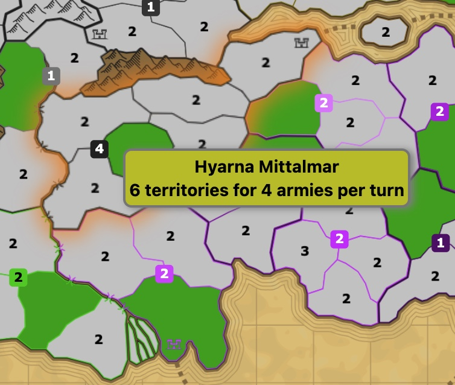
So overall, efficiency isn't as simple as n-1, I just use that metric to categorize templates. The map size and the way the game plays out are equally if not more important, while some bonuses appear inefficient but aren't. Take a look at the central +4 bonus in Numenor. 6 Territories for 4 Income. In theory (n-2) in a template with multiple (n-1) bonuses. However, consider Player A having 2x +2 bonuses of 3 territories each (6 terr for 4 income) and Player B having 1x +4 bonus of 6 territories. Same outcome. What matters is a) the speed at which you can capture the bonus so you can invest that income faster elsewhere against your opponent and b) the safety of that bonus.
The templates above feature mostly bonuses that consist of 4–7 territories, with notable exceptions that push this to the 3–8 range. Smaller bonuses typically are too powerful (assuming they net income), while larger bonuses are too slow to finish. Only notable exceptions in this category are Africa Ultima and Laketown.
On a final note, don't take too granted that efficiency is always better. Ideally you should calculate how your pickset expands and plays out and how it plays out against other ideas. Picking in inefficient bonuses might also surprise your opponent. It's all relative.
Outside of the above 22 templates, the MTL features 9 WR templates that follow the same principles of efficiency. Beyond that, there's a lot (20) of "case-specific" ones that feature ideas which define the template. The army cap templates are... about army cap and army management, similarly for the rest.